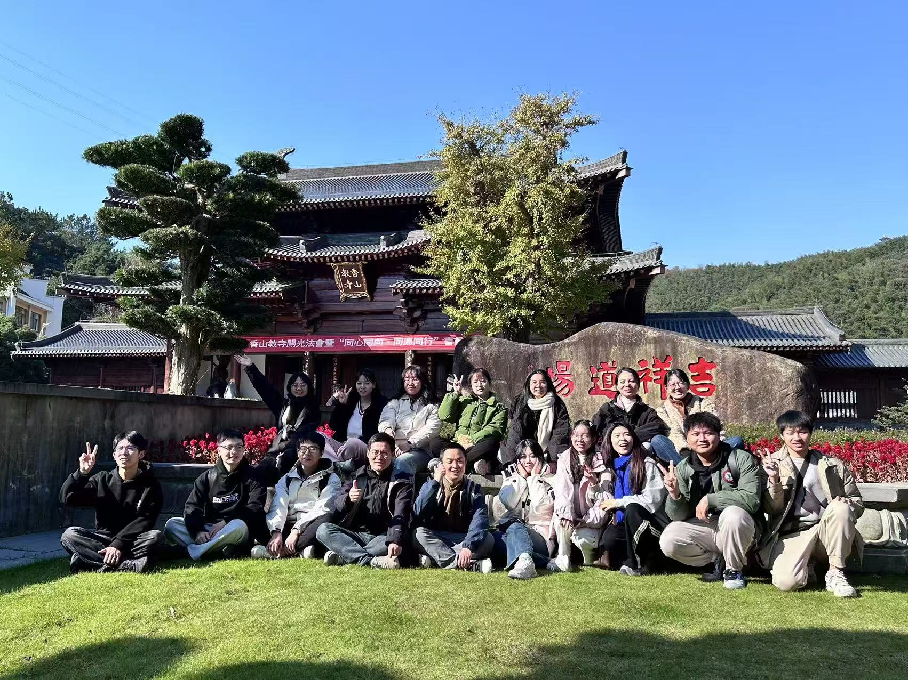

ABOUT US
We are a team dedicated to psychological research, and our laboratory upholds an innovative, collaborative, and rigorous scientific approach to advance the field of psychology.


College of Teacher Education, Ningbo University
We are a team dedicated to psychological research, and our laboratory upholds an innovative, collaborative, and rigorous scientific approach to advance the field of psychology.
Our laboratory focuses on the psychological mechanisms underlying group behavior, social cognition, and human interaction in the context of intelligent technologies. We employ interdisciplinary approaches combining behavioral experiments, cognitive modeling, and computational social science methods.
Dr. Jun Yin, a professor, is the Deputy Dean of the College of Teacher Education and the Director of the Group Behavior Center at Ningbo University. He obtained his B.A. in Psychology (2004–2008) and Ph.D. in Psychology (2008–2013) from Zhejiang University, where he was supervised by Prof. Mowei Shen. Following his doctoral studies, he conducted postdoctoral research at the Cognitive Development Center of Central European University (2013–2015) under the guidance of Prof. Gergely Csibra.
Dr. Yin’s research focuses on group behavior and social influence in the context of artificial intelligence. He employs interdisciplinary approaches, including behavioral experiments, cognitive modeling, and computational social science, to explore these topics. Drawing on his developed group cognition theory, he seeks to understand emergent group behaviors in human-machine hybrid environments within intelligent societies, as well as social behaviors in depressed adolescents.
In addition to his academic roles, Dr. Yin serves as the Vice Chairman of the Council of the Zhejiang Psychology Association and is an Editorial Board Member of the Chinese Journal of Applied Psychology, among other positions. In recognition of his significant contributions to the understanding of group behaviors, Dr. Yin was awarded the Zhejiang Province High-Level Talents Special Support Program for Young Talents.
Dr. Jipeng Duan, a lecturer, is a faculty member in the Department of Psychology, School of Teacher Education at Ningbo University. He earned his Ph.D. in Science from the School of Psychology and Cognitive Science, East China Normal University.
His primary research interests focus on group behavior processing and the cognitive and neural mechanisms related to cognitive aging. He has published several papers as the first author or a co-corresponding author in authoritative Chinese journals such as Acta Psychologica Sinica, and in SSCI-indexed journals such as International Journal of Psychophysiology, Cognitive Science, and Personality and Individual Differences.
Dr. Hui Huang, a lecturer, is a faculty member in the Department of Psychology, School of Teacher Education at Ningbo University. He obtained his bachelor’s degree in psychology from Zhejiang University (2010-2014) and his master’s degree in Basic Psychology from Southwest University (2014-2017) under the supervision of Prof. Jiang Qiu. After that, he got his PhD in Basic Psychology from Peking University, supervised by Prof. Sheng Li.
His research field involves visual perceptual learning, social interaction and group behavior. He mainly uses behavioral experiments, cognitive modeling, and EEG and fMRI techniques to explore how social interaction affects the effects of visual perceptual learning, retroactive interference between visual perceptual learning, and group perceptual decision-making. Besides, he is also interested in social behavior of adolescents with depression. He has published several papers in CSSCI, SSCI and SCI.
Dr. Min Wang is a graduate of the Department of Psychology at the University of Science and Technology of China. His primary research interests include addictive behavior, mental health, and the underlying neural mechanisms. He mainly use neuroimaging techniques, like fMRI and brain stimulation methods, to investigate these field. He has published several studies in reputable, peer-reviewed international journals.
Huang Yueyang, a PhD student in the lab. My research interests lie in the structure and dynamics of social networks, with a focus on uncovering their underlying patterns and practical implications. Beyond research, I enjoy playing badminton. I look forward to broadening my academic horizons and contributing to the growth of our lab.
Wu Fan, currently pursuing a PhD in Education (2025-), is an associate professor and a double-qualified teacher. Her main research interests include childcare services, infant and toddler development, and teacher education. She has hosted multiple teaching reform projects , and co-developed two textbooks in collaboration with industry partners.
Wanqiu Xu, a graduate student (2023-), enjoys literature and fitness. During her undergraduate studies, she majored in Applied Psychology. Her research interests focus on human-AI interaction in traffic scenarios and algorithm aversion.
Qing Lu Xiao is a graduate student (2023– ) with a solid academic background in applied psychology. Her research focuses on social cognition, exploring how individuals perceive, interpret, and interact in social contexts. She developed a strong interest in psychological research during her undergraduate studies, and her passion for reading enhances her understanding of human behavior and cognition.
Jiakai Chen is a graduate student (2023-). He studies bias in artificial intelligence.

Tingzhao,a graduate student (2023-),enjoys reading and watching movies. At the undergraduate stage,she majored in applied psychology.Her research interest is social relationship networks.

Qingqing Ye is a graduate student in psychology with a research interest in social learning.
Hello! I'm Lei Ji,a graduate student(2024-)from Yangzhou,Jiangsu.In my free time,I enjoy playing table tennis,gaming,fitness.My current research interest is conformity, social learning and exploration–exploitation tradeoff.
Zhang Yi, a graduate student in the lab. My research centers on social network. Outside of research, I enjoy fitness and delicacy. Excited to contribute to our lab's explorations!
Ying Zhou,a graduate student(2024-)from Zhejiang, enjoys reading,dancing, and singing. Her research interest is group behavior among adolescents with depression.
Xinnan Zhang,a graduate student(2024-) in applied psychology,has a research interest in social networks
Xingyuan Zhang is a graduate student（2025-）from Zhejiang, loves readinging, jogging and table tennis. At the undergraduate stage, he majored in Applied Psychology and minored in English. His research interest is social cognition
Fang Kewen is a hardcore introvert (but she will keep the conversation going).Cats mom, no kids.Her resting face is just neutral, not angry—promise!
Wenxi Jin, a graduate student (2025–), enjoys reading and handicrafts. At the undergraduate stage, she majored in applied psychology, with particular interest in mental health promotion.
Yuqing Liu is a graduate student (2025- ) , with a particular interest in the study of how groups influence individual psychology. Her hobby is portrait photography.
Yingjun Xue is a graduate student in Applied Psychology at Ningbo University. His current research interests focus on psychology-related business management and product design. Passionate about ball sports such as badminton and table tennis, he also enjoys exploring nature and appreciating scenic landscapes. While describing himself as an introvert who may not always express himself fluently, he emphasizes his warm-heartedness and strong sense of responsibility in all endeavors.


More publications will be added soon.